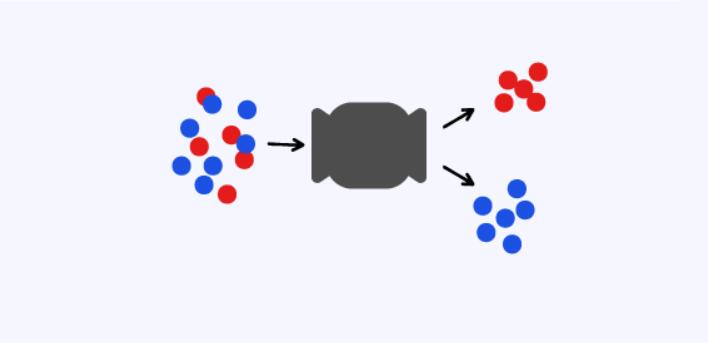

分类问题
作为人类，对于将物体分类这项任务，我们有着得天独厚的优势。

我们可以通过观察、思考和比较轻松地完成这个任务，但是对于计算机来说，这似乎是一项棘手的挑战。
幸好，我们有神经网络。
神经网络的运作方式和人类的大脑很相似，也能够学习、思考和识别。
有些神经网络就被训练来帮助我们完成识别和分类数据的任务，从而解决了人类难以解决的问题，例如在图像识别、自然语言处理等领域中的应用。
今天我们就将以分类问题为例来讲解神经网络的构建与训练
<上一页
下一页>